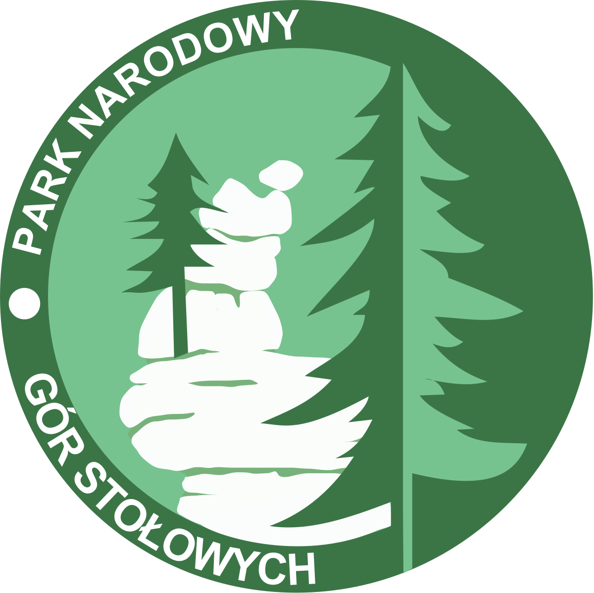

Park Narodowy "Gór Stołowych"
Park Narodowy Gór Stołowych został utworzony 16 września 1993 i obejmuje ochroną obszar 63,40 km². Znajduje się w województwie dolnośląskim, w Kotlinie Kłodzkiej, na terenie Sudetów Środkowych, tuż przy granicy z Czechami. Jest jednym z dwóch parków narodowych na Dolnym Śląsku. Symbolem parku jest Szczeliniec Wielki, czyli najwyższy szczyt pasma. Jest tutaj pięknie i tajemniczo, a Góry Stołowe należą do jednych z wyjątkowych na skalę europejską przedstawicieli gór płytowych. Odnajdziecie tutaj fantazyjne formy skalne, pochowane częstokroć w lasach oraz kręte labirynty. Stąd nazwa – Skalne Miasta.